A step-by-step guide for the person who records the business's money: expenses, petty cash, cheques, payroll, tax payments, customer payments and the month-end checks. Written for someone who has never done accounts before.
Every screen in this guide is a real screen of the GLM POS. The red numbered circles on the pictures match the numbered notes underneath them. The names and amounts in the pictures are practice figures, not the real books.
You do not need to know accounting to use this guide. Read Part 1 once, then keep the guide next to you and follow the steps for whatever you are recording.
What is in this guide
1 The words you will meet
2 Finding your way around
3 The golden rules
4 Recording an expense
5 Bills you pay later (on credit)
6 Mistakes: amend or delete
7 Petty cash and the cheque you cash
8 The cheque register
9 Money coming in from customers
10 Staff pay (payroll)
11 Paying PAYE, NSSF, SHIF, levy and VAT
12 VAT, step by step
13 Setting money aside for income tax
14 Stock purchases and supplier bills
15 Journals: the few you will need
16 Reports and the Books Check
17 Your daily, weekly and monthly routine
18 Mistakes people make, and questions
1The words you will meet
Accounting sounds difficult because of its words. The ideas are simple. Read this page once.
Income (or revenue, or sales)
Money the business earns by selling printing, branding, embroidery and goods. The POS records this for you when an order is paid. You rarely type income by hand.
Expense
Money the business spends to run: rent, electricity, airtime, transport, repairs, refreshments, casual labour. An expense is gone; you do not get it back. Recording expenses is the biggest part of your job.
Profit
Income minus expenses (and the cost of the goods sold). If you earn 100 and spend 80, the profit is 20.
Stock purchase
Buying materials to sell or to make products (blank T-shirts, DTF film, thread). It is not an expense on the day you buy it; it becomes a cost when the goods are used or sold. It is recorded on the Stock screen (Part 14), not as an expense.
VAT
A tax of 16% added to prices. Output VAT is the VAT we charge customers: it belongs to KRA, not to us. Input VAT is the VAT suppliers charge us: we may deduct it. What we owe KRA each month is output minus input. Prices in the POS already include VAT.
PAYE, NSSF, SHIF, Housing Levy
Deductions taken from each employee's salary (plus a matching share from us for NSSF and the housing levy). We hold that money for a short while and must pay it over to KRA, NSSF and SHIF by the due dates. It is not ours to spend.
Petty cash (the float)
The cash kept in the office for everyday spending and for paying salaries. It is topped up by withdrawing money from the bank with a cheque. The POS tracks it like a cash box: money in, money out, balance.
Cheque, and "unpresented" cheque
A cheque is a written instruction to the bank. The day you write it is not the day the bank pays it. A cheque that is written but not yet paid by the bank is unpresented (or "not cleared"). Tracking this is how you match our books to the bank statement.
Paying "on credit"
Taking goods or a service now and paying the supplier later. The money we still owe is a payable (a bill to pay). The opposite is a receivable: money a customer still owes us.
Journal
A manual entry that moves money between accounts when no other screen does it, for example paying VAT to KRA. Part 15 shows the few you will use.
The books / the ledger
The full record of everything. You never write in it directly. Each screen you use posts the right entries for you, and the reports are built from it.
The one idea to remember
Every shilling that moves must be recorded once, on the right screen, on the day it happens, with the proof number (receipt number, invoice number or cheque number). If you do that, the reports look after themselves.
2Finding your way around
Your work is in the Finance group of the side menu. You will use four screens.
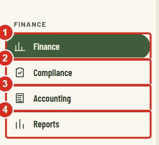
The Finance group of the side menu.
Finance. Your daily screen. Tabs along the top: Quotation, Invoice, Payments, Expenses, Petty Cash, Cheques, Asset Register, Corporate Clients.
Compliance. Staff pay and the taxes: VAT, payments due to KRA/NSSF/SHIF, corporation tax, payroll, employees, P9.
Accounting. The books: Profit & Loss, receivables, payables, credit and debit notes, M-Pesa matching, journals and the Books Check.
Reports. Sales and performance reports for management.
Which tabs you can see depends on your role. If a tab is missing, ask the Admin to give your role the access.
Choosing the dates
Most screens show figures for a date range. Set it first, or you will be looking at the wrong month.
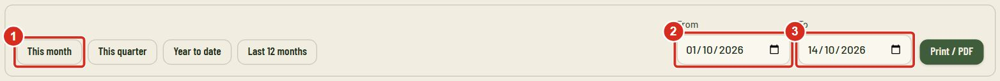
The date range controls that appear at the top of most screens.
Quick buttons: This month, This quarter, Year to date, Last 12 months. One click sets both dates.
From date. Click the box and type or pick a date.
To date. The figures include this day.
The Print / PDF button beside them prints exactly what is on the screen, which is how you hand figures to management or the accountant.
3The golden rules
No receipt, no entry. Ask for a receipt or invoice every time. If there is none (a boda ride, for example), write a short note on a sheet, have the person sign, and record it with that sheet's date as the reference.
Record it the same day. You will not remember on Friday what you paid on Monday.
Record it once. If you put an expense in twice, the books are wrong by that amount. Check the list before adding.
Right category. The category decides which line of the profit report the money lands on. Rent is Rent, not Miscellaneous.
Write the note so a stranger understands it. "Printer paper and staples for the front office" beats "paper".
Always put the cheque number when money leaves by cheque. It is how the bank statement is matched later.
You cannot approve your own correction. Amending or deleting an expense needs a different manager to agree. This protects you as much as the business.
Never spend VAT, PAYE or NSSF money. It is held for others (Part 11).
4Recording an expense
An everyday expense: you spent money on something the business needs.
Go to Finance → Expenses. The form is at the top of the page, and the list of everything already recorded sits below it.
Example 1 — paid from petty cash
You bought printer paper and staples for the front office for Ksh 2,400, receipt RCPT-4471, paid from the cash float.
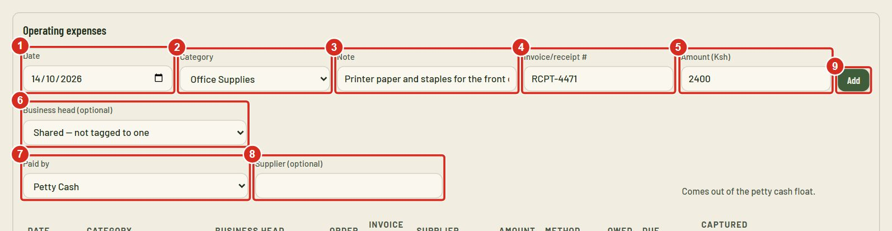
The expense form, filled in for the printer paper example.
Date. The day the money was spent (the date on the receipt), not the day you are typing it. Today is filled in for you; change it if the spending was earlier.
Category. Pick the best match from the list: Office Supplies, Refreshments, Transport, Utilities, Airtime/Data, Courier/Delivery, Casual Labour, Equipment Maintenance, Cleaning, Bank Charges and so on. Use Miscellaneous only as a last resort. If unsure, ask the Finance Manager once and then stay consistent.
Note. A short description of what was bought and why.
Invoice / receipt #. The number printed on the receipt or supplier invoice. Write it exactly. If a supplier later says you did not pay, this is your proof.
Amount (Ksh). The full amount you paid, VAT included. Type digits only (2400), no commas and no "Ksh". The system works out the VAT portion itself.
Business head (optional). Which part of the business this cost belongs to (for example Laser Engraving or DTF Printing). Leave it as Shared — not tagged to one for general costs like rent and electricity. Choose a head when the cost clearly belongs to one line, because it makes the profit-by-head report accurate.
Paid by. How the money left. See the table below. This one choice changes which other boxes appear.
Supplier (optional). Who you paid. Needed when paying on credit, and a good habit for everything else.
Add. Click once. The expense appears in the list below. Do not click twice.
The "Paid by" choices
Choice
Use it when…
What the system does
Petty Cash
You paid in cash from the office float.
Reduces the petty cash balance.
Cheque
You wrote a cheque directly to a supplier or person.
Asks for the cheque number; puts it in the cheque register.
Cash
You paid in cash that did not come from the petty cash float (for example from the day's takings).
Reduces cash on hand.
Bank Transfer
The money went from the bank by transfer, EFT or standing order (rent, bank charges).
Reduces the bank account.
M-Pesa
You paid from the business M-Pesa till or paybill.
Reduces the M-Pesa account.
Card
You paid with a business bank card.
Reduces the bank account.
On credit (pay the supplier later)
You have the goods or service but have not paid yet.
Creates a bill owed to the supplier (Part 5).
Important: the money must exist
Petty cash cannot go below zero. If the float cannot cover an expense, the system refuses it. That is usually a sign a cheque top-up was not recorded (Part 7), not that the expense is wrong.
Example 2 — paid by cheque to a supplier
Change Paid by to Cheque. One extra box appears.
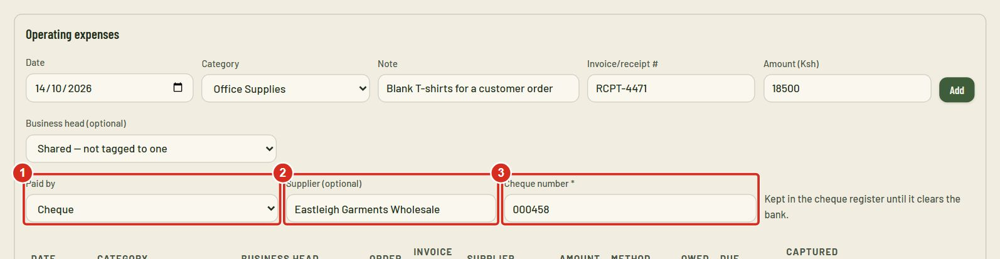
Choosing Cheque adds a mandatory cheque-number box.
Paid by: Cheque.
Supplier. Type the name of the person or company the cheque is made out to.
Cheque number *. The six-digit number printed on the cheque leaf (for example 000458). The star means you cannot save without it. A cheque number can only be used once; the system stops you from using the same one twice.
The note under the box confirms it: Kept in the cheque register until it clears the bank. You will mark it cleared when you see it on the bank statement (Part 8).
After you click Add
The expense is now at the top of the list below the form.
The date, category, amount and method match your receipt.
The receipt is stamped or marked "entered" and filed by date.
5Bills you pay later (on credit)
When a supplier gives you an invoice and you will pay in 30 days.
Step 1 — record the bill when it arrives
Do this on the day you receive the goods or the service, even though no money has moved. That way the books show what we owe.
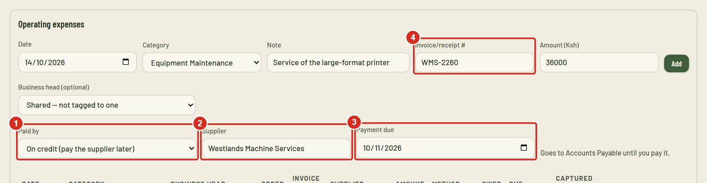
An expense paid on credit: service of the large-format printer, Ksh 36,000.
Paid by: On credit (pay the supplier later).
Supplier. Required for credit; type it exactly the same way every time (the system groups bills by supplier name).
Payment due. The date the supplier expects payment. This feeds the Payables report and tells you what to pay this week.
Invoice / receipt #. The supplier's invoice number.
Fill the date, category, note and amount as usual and click Add.
Step 2 — read the list
Credit bills appear in the same list as other expenses, with extra columns showing what is still owed.
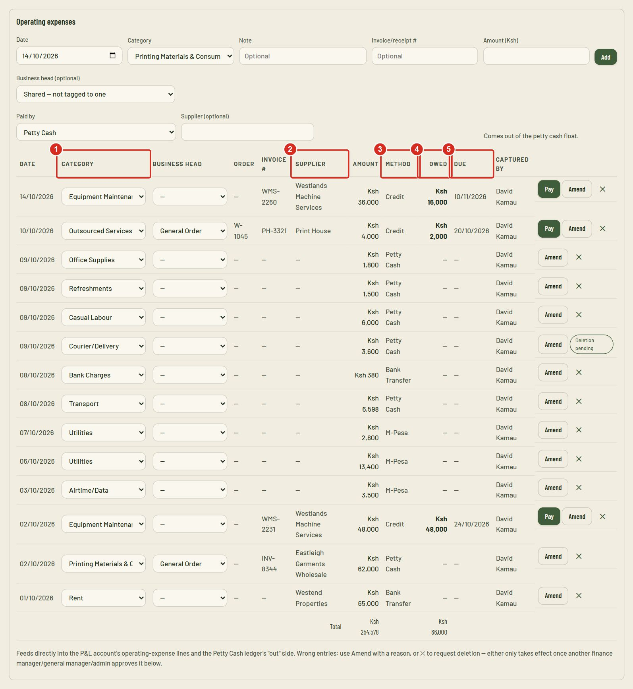
The list of expenses. Rows on credit show a Pay button and the amount still owed.
Category. Each row shows its category. If you picked the wrong one, change it from the drop-down; the system asks you to confirm and moves the expense (amount and date stay the same).
Supplier. Who we owe or paid.
Method. Petty Cash, Credit, Bank Transfer, M-Pesa or Cheque.
Owed. The part of a credit bill still unpaid. A blank dash means nothing is owed.
Due. The date payment is expected.
Pay. Click to record a payment to the supplier (Step 3).
The Total line at the bottom adds up the amounts and what is still owed. Beside Pay you also see Amend and a small ✕; both are explained in Part 6.
Step 3 — pay the bill
Find the bill in the list and click Pay. A small payment form opens under that row.
Fill the form (below) and click Record payment.
The Owed amount drops. Part-payments are fine: pay 20,000 now and the rest later. The bill disappears from Owed when it reaches zero.
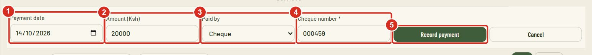
Paying Ksh 20,000 of a bill by cheque.
Payment date. The day the payment was made (the date on the cheque or transfer).
Amount (Ksh). How much you are paying now. It cannot exceed what is owed.
Paid by. Cheque, Bank Transfer, M-Pesa or Petty Cash.
Cheque number. Appears when you choose Cheque. Required.
Record payment. Saves it. Cancel closes the form without saving.
Do not record the same bill twice
When you pay a credit bill, you use Pay on the existing row. Do not add a new expense for the payment. The expense was already recorded in Step 1; the payment only settles it.
6Mistakes: amend or delete
Everyone makes typing mistakes. The system lets you fix them, with a second person agreeing.
Once an expense is saved you cannot quietly change it. You ask for a change, give a reason, and another manager approves. That record is kept forever, which is what auditors like to see.
Amending an expense (wrong amount, date, category or note)
In the list, click Amend on the row. A form opens under it.
Change only what is wrong.
Type the reason. Click Submit.
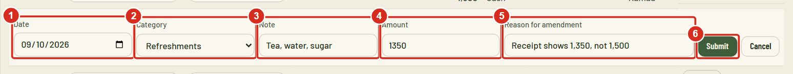
Correcting a refreshments entry from Ksh 1,500 to Ksh 1,350.
Date.
Category.
Note.
Amount. The corrected amount.
Reason for amendment. Required. Be specific: "Receipt shows 1,350, not 1,500".
Submit. Sends the request. Cancel abandons it.
Until it is approved, the original figure stays in the books.
Deleting an expense (recorded twice, or never happened)
Click the small ✕ at the end of the row.
Type the reason for deletion and click Submit.
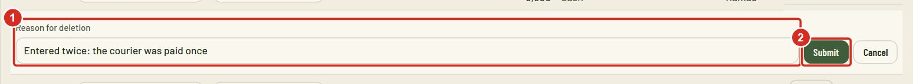
Asking to delete a duplicate entry.
Reason for deletion. Required. "Entered twice: the courier was paid once."
Submit. Sends the request for approval.
The second person approves
A different Finance Manager, General Manager or Admin opens Finance → Expenses and scrolls to the request boxes at the bottom. You cannot approve your own request; the screen tells you so.
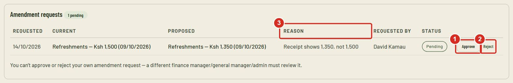
What the approver sees for an amendment.
Approve. The change is applied and the books update.
Reject. The original stays as it was.
Reason. The explanation you gave. This is why you should write a clear one.
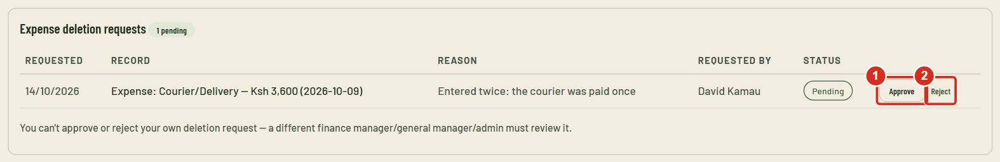
Deletion requests are decided the same way.
Approve. The expense is removed from the books.
Reject. The expense stays.
Tip
Tell the approver you have sent a request. Pending requests sit quietly until someone looks.
7Petty cash and the cheque you cash
At GLM, a cheque is usually drawn in the Finance Head's name, cashed, and the cash is used for salaries, purchases and everyday costs. This part shows how to record that so nothing is lost.
1. Cheque writtenMade out to the Finance Head, number noted.
2. Cashed at the bankCash comes to the office.
3. Feed petty cashRecord it here with the cheque number.
4. Spend itSalaries, purchases, expenses, each recorded.
5. ClearedSee it on the bank statement; mark cleared.
The Petty Cash screen
Go to Finance → Petty Cash.
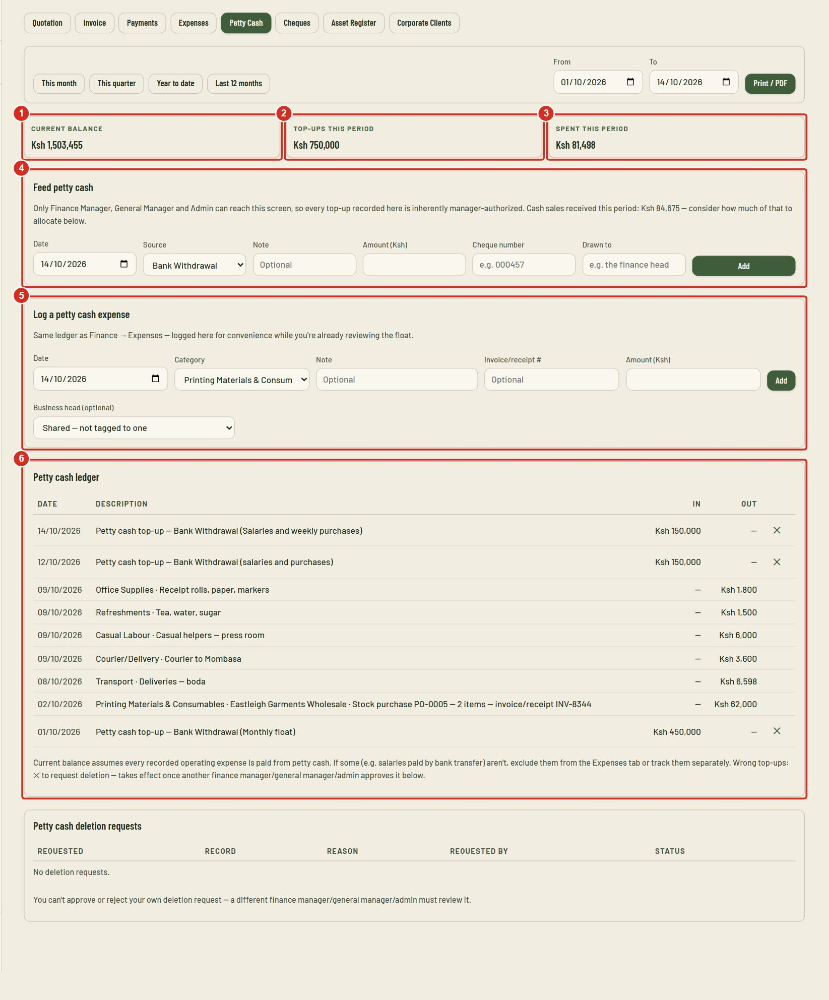
The Petty Cash screen.
Current balance. The cash that should be in the box right now. Count the real cash and compare. They must agree.
Top-ups this period. Cash brought in from the bank in the chosen dates.
Spent this period. Everything paid out of petty cash in those dates (expenses and wages).
Feed petty cash. Record a top-up (below).
Log a petty cash expense. A shortcut for entering an expense paid from the float; it is the same as the Expenses screen.
Petty cash ledger. A running list of money in and out. Wrong top-ups can be removed with the ✕, with the same second-person approval as expenses.
Recording a cheque cashed for the float
Open Petty Cash. Use the Feed petty cash box.
Fill the boxes below, then click Add.
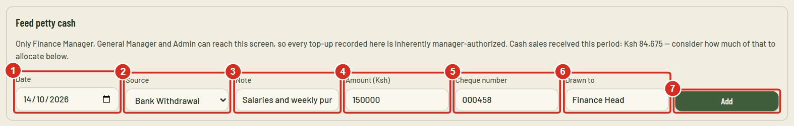
Recording cheque 000458 for Ksh 150,000.
Date. The day the cash was withdrawn.
Source. Bank Withdrawal for a cheque cashed at the bank. The other choices are Cash Sales Allocation (setting aside some of the day's cash takings for the float) and Owner Injection (the owner puts cash in).
Note. Say what the cash is for: "Salaries and weekly purchases". If you withdrew for several purposes, name them all.
Amount (Ksh). The full amount of the cheque.
Cheque number. The number on the cheque leaf. Fill this in every time.
Drawn to. The name on the cheque, for example "Finance Head".
Add. Saves it. The balance goes up immediately.
One cheque, many purposes
Do not split a single cheque into several top-ups. Record it once for the full amount. The system shares the later spending across withdrawals, oldest first, and shows you how much of each cheque went to salaries, purchases and expenses (Part 8). Splitting it by hand only creates confusion.
Spending from petty cash
Record every item spent from the float as an expense with Paid by: Petty Cash (Part 4), and every salary through Payroll (Part 10; wages are always paid from petty cash). Then the balance on screen stays true.
Count the cash every week
Once a week (and at month-end), count the cash in the box and write the figure next to the screen's Current balance. A difference means something was not recorded, or was recorded wrongly. Find it now; it is easy today and hard in three months.
8The cheque register
One list of every cheque we have written, and whether the bank has paid it.
Go to Finance → Cheques. Nothing is typed here for ordinary cheques: they land in the register on their own when you record them in Part 4, 5 or 7.
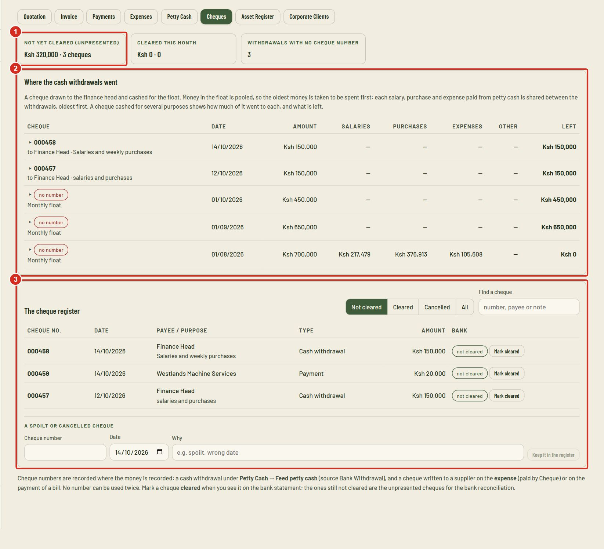
The Cheques screen.
Not yet cleared (unpresented). The total of cheques written but not yet paid by the bank. The bank balance minus this is what is really ours. The third box counts cash withdrawals that have no cheque number; open each one and fix it.
Where the cash withdrawals went. For every cash cheque: how much went to salaries, purchases, expenses and other things, and how much is left. Read this to answer "where did that Ksh 150,000 go?".
The cheque register. The full list. Filter by Not cleared, Cleared, Cancelled or All, or search a number, payee or note.
Marking a cheque cleared
Open the bank statement (online or the paper copy).
For each cheque that appears on it as paid, find the same number in the register and click Mark cleared, set the date the bank paid it (the date on the statement) and click Cleared.
Cheques still showing "not cleared" are the unpresented ones. They are normal for a few days; more than 30 days old is worth a call to the payee.
A spoilt or cancelled cheque
If you spoil a leaf, do not throw it away. At the bottom of the register, type its number, the date and why (for example "spoilt, wrong date") and click Keep it in the register. Then the numbers run in order with no mystery gaps.
Why this matters
A complete register with every number accounted for is the best proof of control you can give an auditor or the owner.
9Money coming in from customers
Most income is recorded by the sales staff when they take orders and receive payments. Your part is to watch what is still owed and to make sure the money really arrived.
Payments
Finance → Payments is a report of what customers owe and have paid, order by order. You read it; payments themselves are recorded on the order by the sales staff.
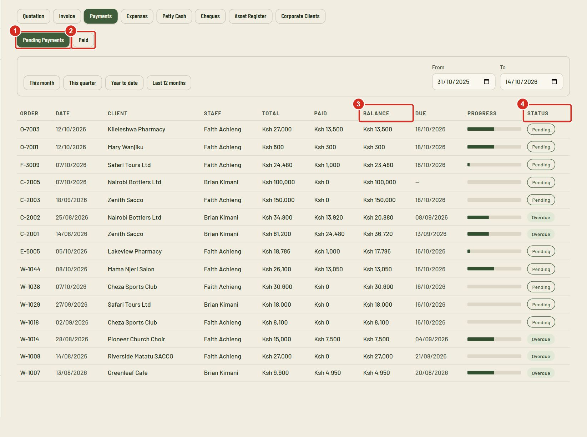
The Payments screen.
Pending Payments. The tab listing orders with money still to collect.
Paid. The tab listing orders already settled.
Balance. What the customer still owes on that order (Total minus Paid).
Status. Settled, Pending, or Overdue when the due date has passed.
Every Monday, run down the Overdue rows and ask the sales person or the customer for the money. When a payment arrives by M-Pesa or bank and nobody has recorded it, tell the sales staff to record it on the order.
Customers who owe: Receivables
Accounting → Receivables groups unpaid invoices by how old they are.
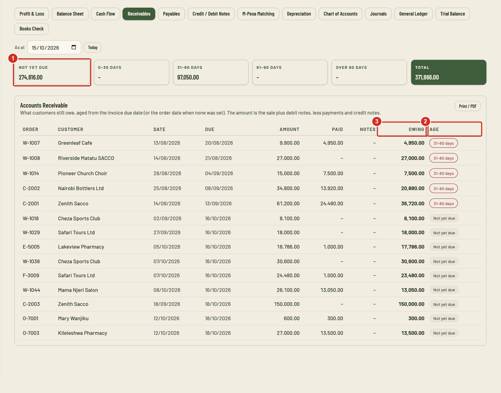
Receivables, by age of the debt.
Not yet due. Invoices still within the customer's payment terms.
Age. How many days overdue. Older debts are harder to collect: phone the customer now.
Owing. The amount to collect.
M-Pesa receipts that need matching
M-Pesa money arrives with a code rather than an order number. Accounting → M-Pesa Matching lets you read the M-Pesa statement and match each receipt to the right order.
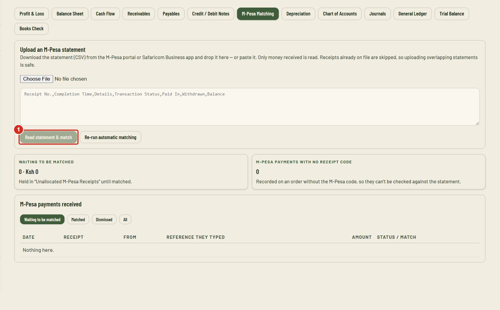
M-Pesa matching.
Read statement. Upload the M-Pesa statement. The system lists each receipt and suggests the order. Confirm the right ones and dismiss the ones that are not sales.
An unmatched receipt is real money that the books cannot explain. Clear them at least weekly.
Refunds and corrections to a sale: credit notes
If a customer returns goods or is overcharged, you do not delete the sale. You issue a credit note, which takes the sale (and its VAT) back properly. Go to Accounting → Credit / Debit Notes.
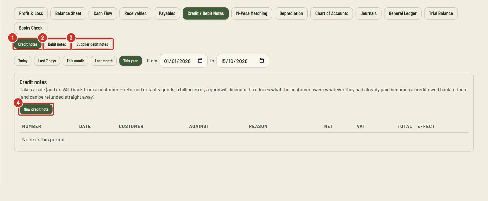
The Credit / Debit Notes tab.
Credit notes. Reduce what a customer owes us (returns, faulty goods, discounts).
Debit notes. Increase what a customer owes us (an undercharge).
Supplier debit notes. Goods we return to a supplier, to reduce what we owe them.
New credit note. Starts the form below.
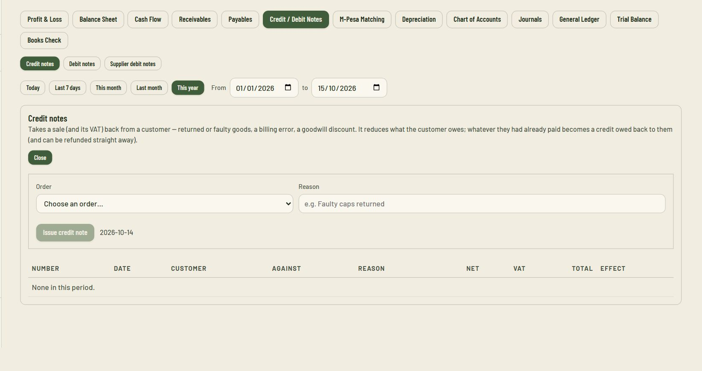
Issuing a credit note: choose the order, give the reason, then click Issue credit note.
Choose the Order, type the Reason ("Faulty caps returned") and pick the items being credited. Click Issue credit note. If the customer had already paid, the amount becomes money we owe them, and you can refund it straight away.
10Staff pay (payroll)
Each month every employee is paid, and the taxes are worked out for you.
Before the first pay: employee details
Go to Compliance → Employees and make sure every person has the details KRA and NSSF need.
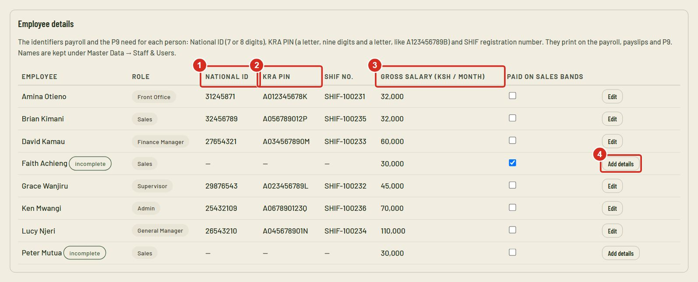
Employee details.
National ID.
KRA PIN. Needed for the employee's PAYE return.
Gross salary. The agreed monthly salary before any deductions.
Add details. Click for people with a missing record, and fill the form.
Staff names come from Master Data → Staff & Users. If a new person is not in the list, ask the Admin to add them first.
Logging the month's pay
Go to Compliance → Payroll. Do this once per person per month.
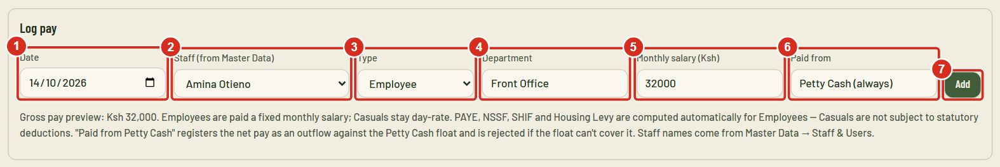
Logging a month's pay for one employee.
Date. The pay date (usually the last working day of the month).
Staff. Pick the person.
Type.Employee for permanent staff on a monthly salary. Casual for day-rate workers; casuals carry no statutory deductions.
Department.
Monthly salary (Ksh). The gross salary. A line under the form shows a gross-pay preview.
Paid from. Always Petty Cash. The net pay (after deductions) leaves the float and the system refuses it if the float cannot cover it. Feed petty cash first if needed (Part 7).
Add. Saves the pay. PAYE, NSSF, SHIF and the housing levy are worked out automatically.
Reading the payroll log
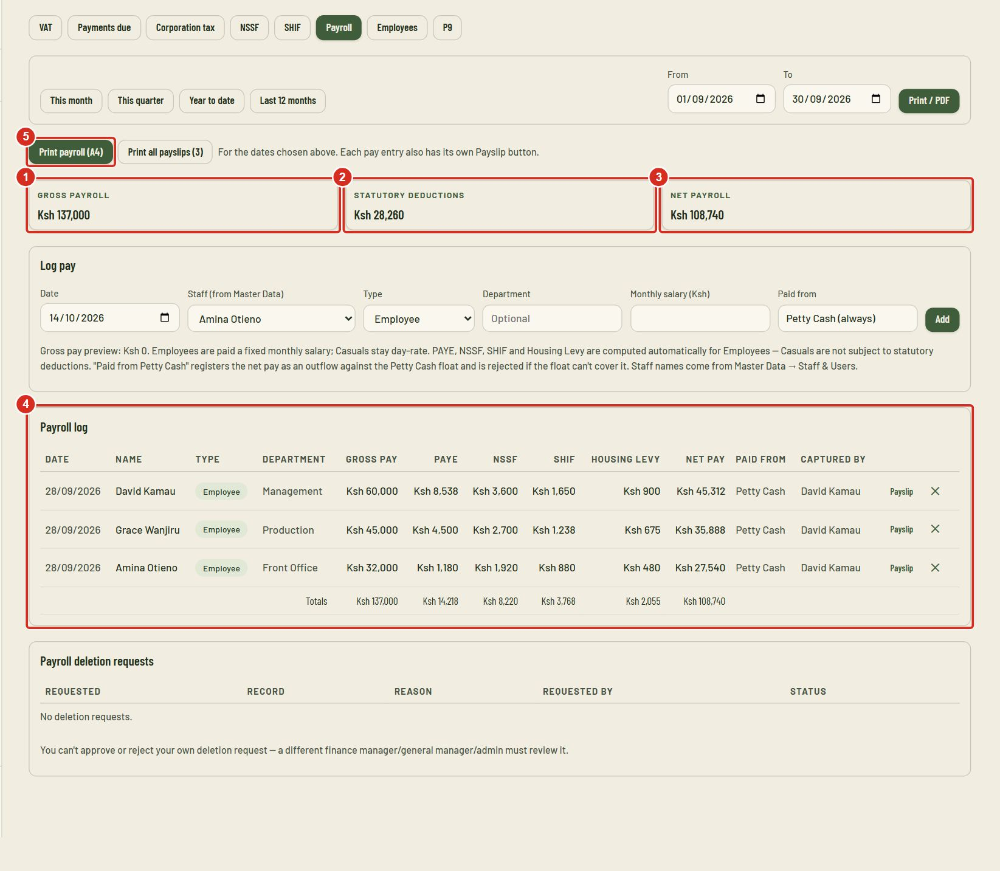
The payroll log and summary for September.
Gross payroll. What the staff earned before deductions.
Statutory deductions. PAYE, NSSF, SHIF and the housing levy taken from pay. This is money the business must pay over.
Net payroll. What staff actually receive.
Payroll log. One row per person: gross, each deduction, net, who captured it. Payslip prints that person's payslip. The ✕ asks to delete a wrong entry (with approval, as for expenses).
Print payroll (A4) prints the whole month for signing. Print all payslips prints one slip per person.
What the numbers mean
Example from the screen: gross Ksh 137,000, less statutory deductions Ksh 28,260, leaves net Ksh 108,740 paid out in cash. The Ksh 28,260 stays in our hands until paid to KRA, NSSF and SHIF (Part 11). The business also owes its own matching NSSF and housing levy on top.
Monthly payroll checklist
All new staff and salary changes entered under Employees.
Petty cash balance is at least the net payroll total.
Every employee has one pay row for the month (no one missing, no one twice).
Payroll printed, signed by each employee when they receive cash, and filed.
11Paying PAYE, NSSF, SHIF, the levy and VAT
The part with deadlines. Late payment brings penalties.
Go to Compliance → Payments due. Pick the months you want (for example the last two) and the screen tells you what to pay and when.
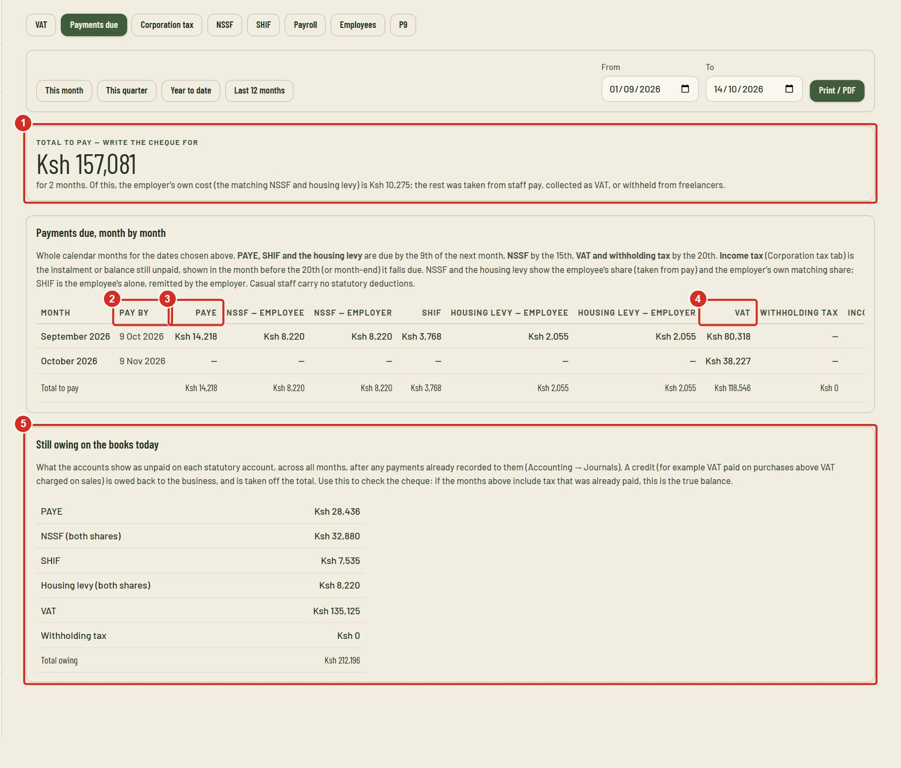
Payments due, month by month.
Total to pay — write the cheque for. Everything due for the months selected, added together.
Pay by. The deadline for that month's row.
PAYE (and the other columns across: NSSF, SHIF, Housing Levy, Withholding tax, Income tax).
VAT. The net VAT due for that month.
Still owing on the books today. What the books say is unpaid per tax account after payments already recorded. Use this to check before writing a cheque.
Tax
Pay to
Due by
PAYE, SHIF, Housing levy
KRA / SHA / housing levy account
The 9th of the next month
NSSF
NSSF
The 15th of the next month
VAT and withholding tax
KRA
The 20th of the next month
Corporation (income) tax
KRA
Instalments through the year, with the final balance after the year ends (Part 13)
Recording the payment (so the books show it as paid)
Paying the tax at the bank or on iTax is only half the job. You must also tell the POS you paid, otherwise it keeps showing the amount as owing.
Make the payment (cheque, bank transfer or the portal). Keep the payment slip or reference.
Go to Accounting → Journals and click Pay VAT / PAYE / NSSF…
Choose the account being paid, put the amount in the Debit column, and make sure the other line is the Bank Account (the money left the bank). Click Post journal.
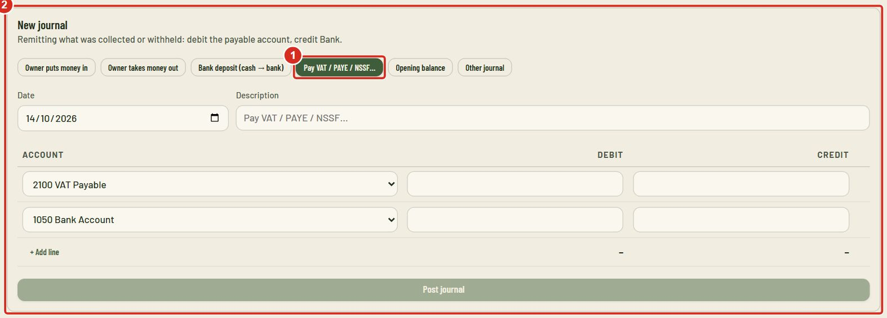
The Pay VAT / PAYE / NSSF journal. Choose the tax account, enter the amount, click Post journal.
Pay VAT / PAYE / NSSF… picks the right type of journal and puts the tax account on the first line and the bank on the second.
The journal form. Date and a description (for example "PAYE and NSSF for September, KRA ref 12345"). The first line is the tax account you are paying and takes the Debit amount. The second line is the bank and takes the same amount in Credit. The two totals must be equal before Post journal turns green.
Never spend this money
The deductions held from staff pay and the VAT collected from customers are not profit. If the bank balance looks healthy, check Payments due before deciding that you can afford anything.
12VAT, step by step
Go to Compliance → VAT and choose the month.
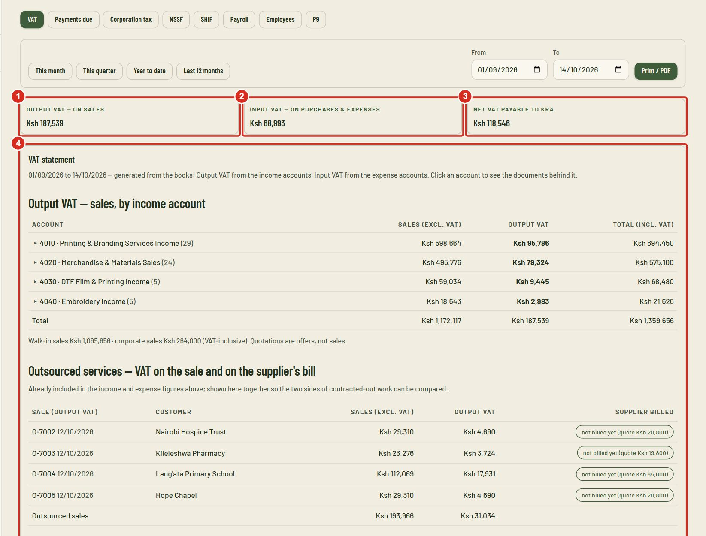
The VAT summary for a period.
Output VAT — on sales. The VAT we charged customers.
Input VAT — on purchases & expenses. The VAT suppliers charged us.
Net VAT payable to KRA. Output minus input. This is what you pay.
VAT statement. The detail: sales by income account, and the supplier bills behind input VAT. Click an account to see the documents behind the figure. Print / PDF gives the working to keep with the return.
How to do the monthly VAT return
On the 1st of the month, set From and To to the previous month (for example 01/09 to 30/09).
Confirm every expense and stock purchase of that month is recorded with its supplier invoice number. VAT you cannot support with an invoice cannot be claimed.
Click Print / PDF and file the page.
File the return on iTax by the 20th using the Net VAT payable figure.
Pay it, then record the payment with the Pay VAT journal (Part 11).
Reminder
Only expenses with a proper supplier invoice carry claimable VAT. A bare receipt without the supplier's PIN and VAT detail usually does not.
13Setting money aside for income tax
The business pays corporation tax on its profit. The planner tells you how much to put aside each month so there is no shock at filing time.
Go to Compliance → Corporation tax. It is for information and planning only: it does not move money.
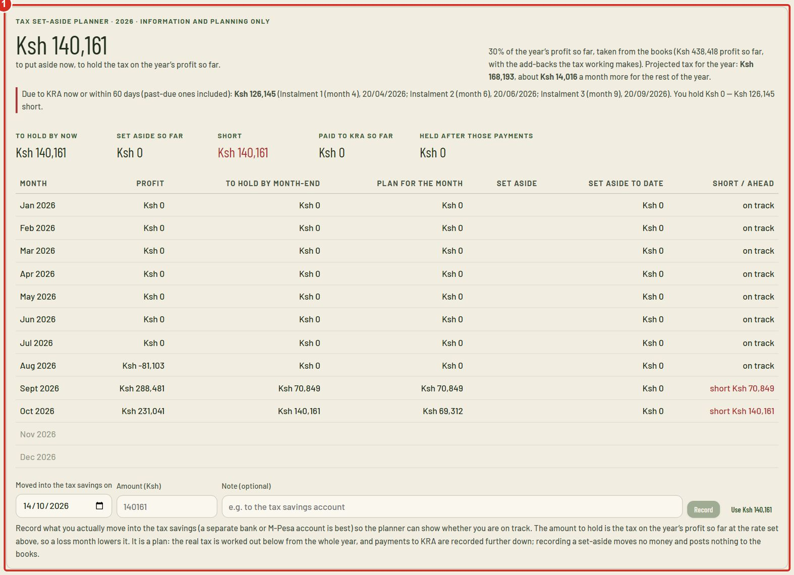
The tax set-aside planner.
The planner. The large figure is what you should have set aside by now (here Ksh 140,161, which is 30% of the year's profit so far). The table below shows each month's profit, what to hold, what you set aside and whether you are on track.
Each month
After the month-end checks (Part 17), open the planner and read Plan for the month.
Move that amount into a separate savings account (a separate bank or M-Pesa account is best), so it is not spent by mistake.
At the bottom of the planner enter the date, the amount actually moved and a note, then click Record. This does not post anything to the books; it only lets the planner show whether you are on track.
The red banner at the top lists instalments due to KRA in the next 60 days. When you pay KRA, the Admin records it on the same Corporation tax screen (Record a payment to KRA, below the planner; only an Admin can change the tax settings or record a payment). Give the Admin the KRA payment reference.
14Stock purchases and supplier bills
Buying things to sell or to make products is not an ordinary expense.
Purchases are recorded on Stock → Purchases. The store manager raises a requisition, a manager approves it, and the purchase is captured with the supplier invoice. It is then received into stock when the goods physically arrive.
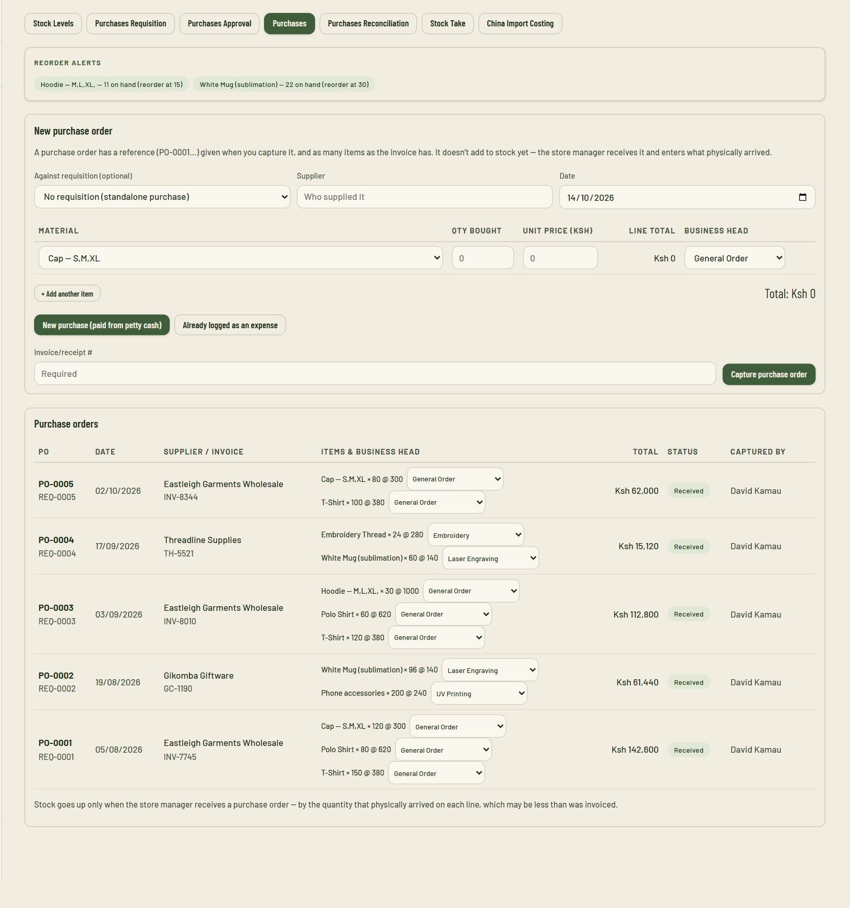
Capturing a stock purchase order against a supplier invoice.
For each purchase make sure you have:
The supplier name, spelled the same way every time.
The invoice number and the date on the invoice.
Each material, the quantity and the unit price.
The business head each item belongs to (or Shared).
How it was paid: from petty cash, by cheque (with the number), or on credit.
Do not enter a purchase twice
A stock purchase already posts its own cost and VAT. Do not also add it on the Expenses screen. When stock is paid from petty cash it shows in the petty cash ledger by itself, as in the earlier screenshot.
What we owe suppliers: Payables
Accounting → Payables lists unpaid supplier bills. Open it every Monday and decide what to pay this week.
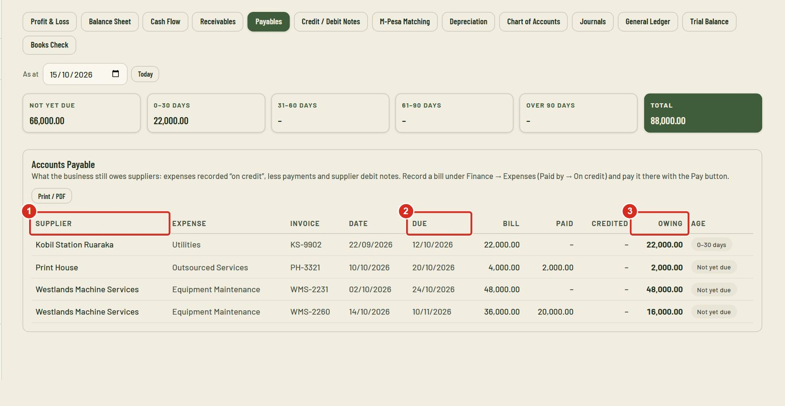
Payables: what we owe suppliers.
Supplier.
Due. Pay on or just before this date. Late payment can lose supplier goodwill and discounts.
Owing. The amount unpaid. Pay it from the expense row (Pay, Part 5) or the purchase.
Assets we keep for years
Machines, computers and furniture are assets, not expenses. Record them in Finance → Asset Register so the system spreads their cost over their useful life (depreciation). Ask the Finance Manager before recording anything above a small value.
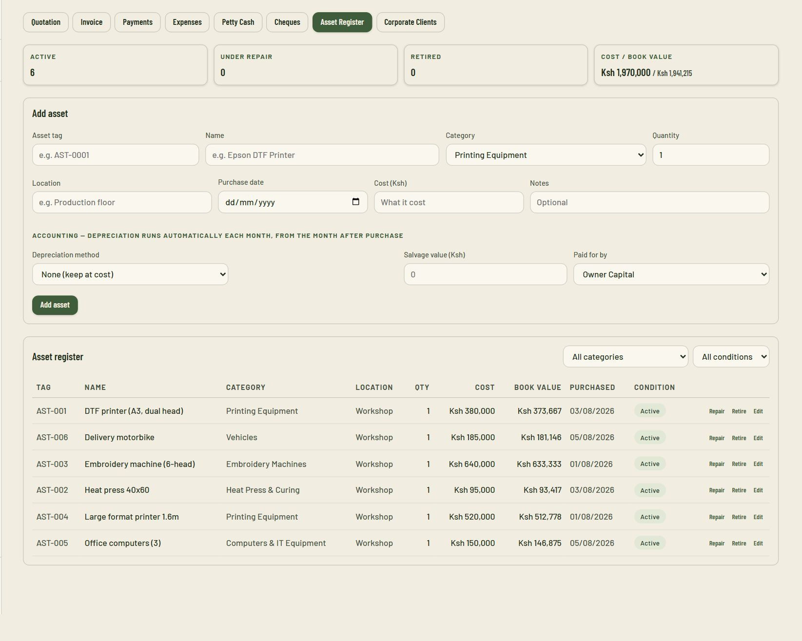
The Asset Register.
Corporate clients
Finance → Corporate Clients holds the businesses we invoice on credit, with their payment terms and contacts. Keep their details current so the invoices and statements go to the right place.
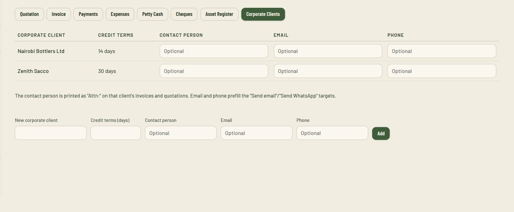
Corporate Clients.
15Journals: the few you will need
A journal is a hand-made entry. Most days you will not need one.
Go to Accounting → Journals. The screen offers ready-made types, so you do not need to know which accounts to pick.
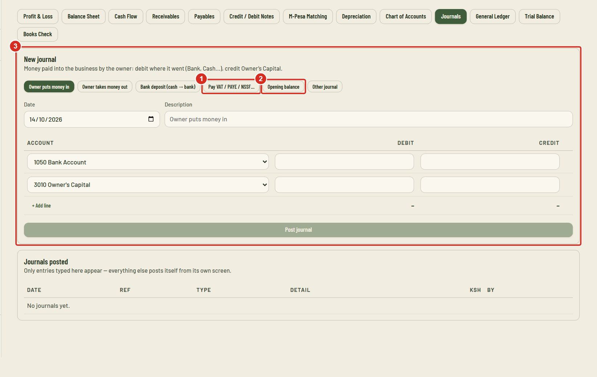
The Journals screen.
Pay VAT / PAYE / NSSF… Records tax paid over to the authorities (Part 11).
Opening balance. Used once, when the books first start, to enter what the business already had. Ask the Finance Manager.
The new journal form. Every journal needs total Debits equal to total Credits; the Post journal button stays grey until they match.
Type
Use it when…
Owner puts money in
The owner pays money into the business bank account.
Owner takes money out
The owner withdraws money for personal use (not an expense).
Bank deposit (cash → bank)
You take sales cash to the bank and deposit it.
Pay VAT / PAYE / NSSF…
You have paid tax to the authorities.
Opening balance
Setting up the books, once.
Other journal
Anything else. Do not use it without asking the Finance Manager.
Debit and credit in one line
Every movement of money has two sides: where it came from (credit) and where it went (debit). Pay VAT: debit VAT Payable (we owe less), credit Bank (we have less). The ready-made types set those sides for you.
The chart of accounts
All accounts are listed in Accounting → Chart of Accounts: assets (what we own), liabilities (what we owe), income, expenses and equity. You normally only look here to find the name of an account.
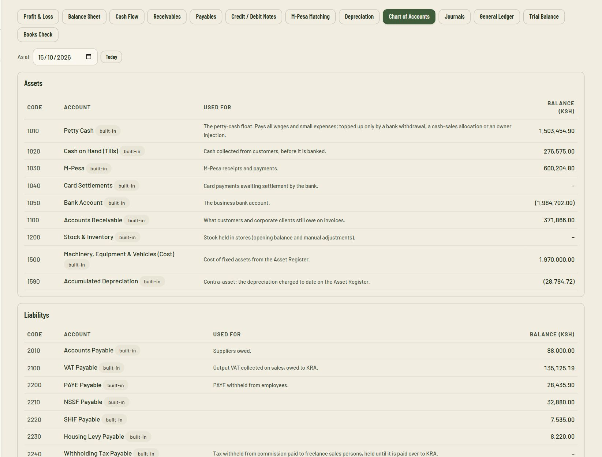
The chart of accounts.
16Reports and the Books Check
All the books' reports are in Accounting.
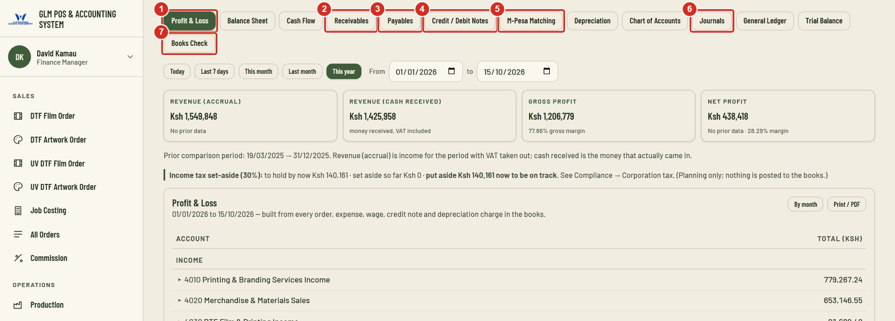
The tabs of the Accounting screen.
Profit & Loss. Income minus expenses for the dates chosen: did we make money?
Receivables. What customers owe us.
Payables. What we owe suppliers.
Credit / Debit Notes. Corrections to sales and purchases.
M-Pesa Matching. Matching M-Pesa receipts to orders.
Journals. Hand entries (Part 15).
Books Check. An automatic self-test of the books.
Others in the row: Balance Sheet (what we own and owe at one date), Cash Flow (where the cash came from and went), Depreciation, General Ledger (every entry, line by line) and Trial Balance (every account's total).
The Profit & Loss
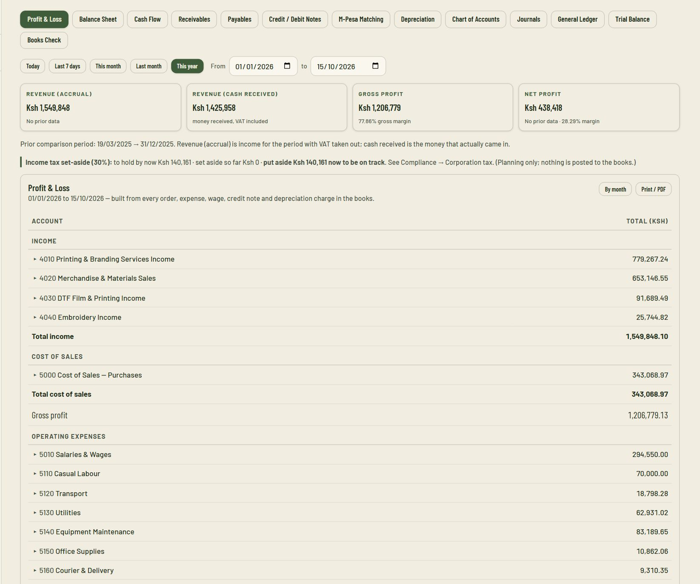
The Profit & Loss report.
Read it from the top: the income lines, then the cost of what we sold, then each expense line, then the profit at the bottom. If an expense line looks too big or too small, click through to see the entries. Often it points to a wrongly categorised expense.
The Books Check: run it every month-end
Go to Accounting → Books Check. It re-works each record and compares it with what the books posted.
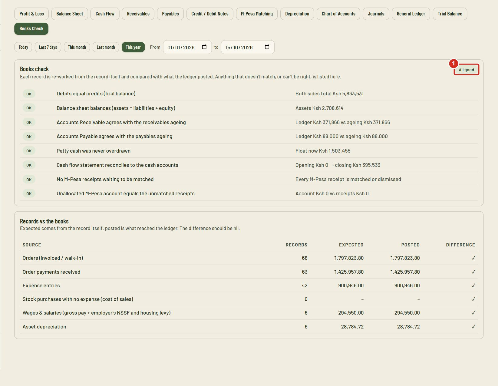
The Books Check, with everything agreeing.
All good. The badge turns green when every test passes. If it lists a problem instead, read the description and fix the entry that causes it. Do not ignore it.
The tests include: debits equal credits, the balance sheet balances, receivables and payables agree to their reports, petty cash never went below zero, and no M-Pesa receipts are waiting to be matched.
17Your daily, weekly and monthly routine
Every day
Record each expense with its receipt (Part 4).
Record any cheque cashed or written, with its number (Parts 5, 7).
Check Payments for customers who have paid (Part 9).
Count the petty cash at close; it must match the screen.
File the day's receipts, newest on top.
Every week
Review Payables and decide what to pay (Part 14).
Match M-Pesa receipts (Part 9).
Phone customers with old receivables.
Compare the cheque register with the bank statement and mark the cleared ones (Part 8).
Ask the second approver to clear any pending requests (Part 6).
Every month-end
Record payroll for every employee, print and have it signed (Part 10).
Open Payments due, write the cheques, pay on time and post the payment journals (Part 11).
Do the VAT return (Part 12).
Record the tax set-aside (Part 13).
Count petty cash, check every cheque is accounted for (Part 8).
Run the Books Check and fix every item (Part 16).
Print the Profit & Loss and file it with the month's papers.
Every year
Give the accountant the P&L, Balance Sheet, payroll summary, VAT statements, cheque register and Books Check.
Confirm the asset register is complete.
Reconcile the final bank balance, allowing for unpresented cheques.
18Mistakes people make, and questions
The mistake
What to do instead
Entering an expense twice
Search the list before you add. If it happens, request a deletion with a reason (Part 6).
Adding a new expense when paying a credit bill
Use Pay on the original row (Part 5).
Entering a stock purchase on the Expenses screen
Use Stock → Purchases. It already records the cost.
Splitting one cheque into several top-ups
Record the cheque once; the Cheques screen shows where it went.
Leaving the cheque number blank
Always record it. Fix old ones from the register.
Putting the amount without VAT
Enter the full amount you paid; the system splits the VAT.
Using "Miscellaneous" for everything
Choose the closest real category.
Paying tax but not recording it
Post the payment journal (Part 11).
Spending the VAT or payroll tax money
Check Payments due before spending a surplus.
Looking at the wrong dates
Always check From and To (Part 2).
Ignoring a Books Check warning
Fix it now; it grows.
Questions
The system will not accept my petty cash expense.
The float cannot cover it. Check that the last cheque you cashed is recorded under Petty Cash → Feed petty cash. If the cash exists, record the top-up first.
I entered the wrong date.
Use Amend (Part 6) and have it approved.
I do not have a receipt.
Write a signed note with the date, what, who and amount. Record it and say so in the Note box. Tell the Finance Manager.
The cheque number says it is already used.
Another entry has that number. Open the Cheques screen and search for it. You may be entering the same cheque twice, or the number was mistyped.
A cheque was cashed for several things.
Record it once. The "Where the cash withdrawals went" box shows how it was spent (Part 8).
Can I see who changed something?
Yes. Every entry shows who captured it, and every amendment or deletion keeps who asked, who approved and why.
I cannot see a tab.
Your role does not have access. Ask the Admin.
Who do I ask for help?
Your Finance Manager first. Never guess at a journal; ask.
You are ready
Start with one real expense today, follow Part 4 slowly, and check the result in the list. After a week it will take thirty seconds.